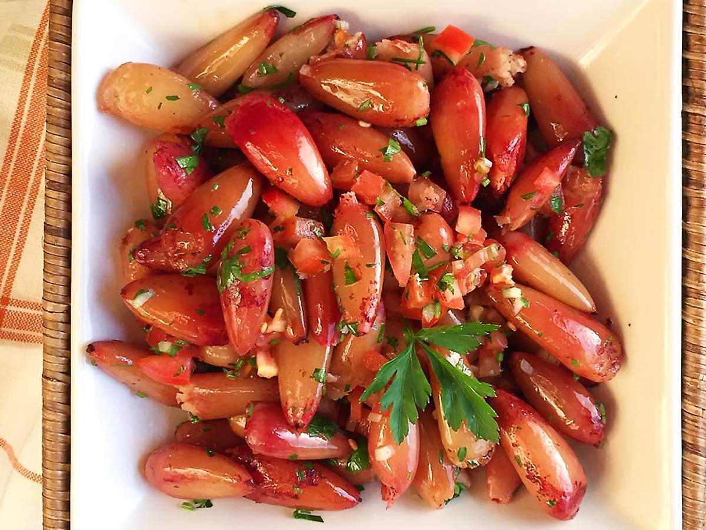

Pinhão Cozido
O Pinhão Cozido é um prato típico do Sul do Brasil, especialmente do Paraná, Santa Catarina e Rio Grande do Sul, sendo muito consumido durante o inverno e nas festas de São João. Rico em nutrientes, é uma tradição da cultura local.

Ingredientes
Serve 4 porções
- 500 g de pinhão cru
- Água suficiente para cobrir os pinhões
- 1 colher de sopa de sal
Modo de Preparo
Tempo estimado: 1 hora
- Lave bem os pinhões e retire possíveis sujeiras.
- Coloque os pinhões em uma panela grande e cubra com água.
- Adicione o sal e leve ao fogo médio-alto até ferver.
- Reduza o fogo e cozinhe por aproximadamente 40 a 50 minutos, ou até que fiquem macios.
- Escorra a água e sirva os pinhões ainda quentes.
Dica do Chef: Para facilitar o consumo, você pode cortar a ponta do pinhão antes de cozinhar. Sirva acompanhado de chimarrão ou café para uma experiência típica do Sul.